library(blackmarbler)
library(sf)
library(terra)
library(ggplot2)
library(dplyr)
library(tidyr)
library(tidyterra)
library(lubridate)
library(tigris)
library(exactextractr)
options(tigris_use_cache = TRUE)
bearer <- Sys.getenv("NASA_BEARER")
if (nchar(bearer) == 0) {
stop("NASA_BEARER not found. Run usethis::edit_r_environ(), add NASA_BEARER=your_token, then restart R.")
}nighttime_lights
DS-422 Geocomputation: Kona Low Storms
Research question: How did the first Kona Low storm and second Kona Low storm differ in their impact on power outages on Oahu?
Sub questions:
Regionally, how did the impacts differ?
Did the outage patterns correlate with the storm’s paths?
Setup
Dates
Baseline: March 1 to March 7. Storm 1: March 10 to March 16. Gap: March 18. Storm 2: March 19 to March 24.
all_dates <- list(
baseline = seq.Date(from = ymd("2026-03-01"), to = ymd("2026-03-07"), by = "day"),
storm1 = seq.Date(from = ymd("2026-03-10"), to = ymd("2026-03-16"), by = "day"),
gap = ymd("2026-03-18"),
storm2 = seq.Date(from = ymd("2026-03-19"), to = ymd("2026-03-24"), by = "day")
)Hawaii boundary
tigris defaults to NAD83 and Black Marble expects WGS84, so the reprojection is required. Honolulu County’s official boundary extends across the Northwestern Hawaiian Islands, so it is cropped to Oahu itself.
roi_hawaii <- counties(state = "HI", cb = TRUE, year = 2022) |>
st_transform(4326) |>
st_crop(xmin = -160.5, xmax = -154.5, ymin = 18.5, ymax = 22.5) |>
filter(NAMELSAD != "Kalawao County") |>
mutate(county = gsub(" County", "", NAME))
roi_sf <- roi_hawaii |>
filter(county == "Honolulu") |>
st_crop(xmin = -158.35, xmax = -157.60, ymin = 21.20, ymax = 21.75)
plot(st_geometry(roi_sf), main = "Oahu region of interest")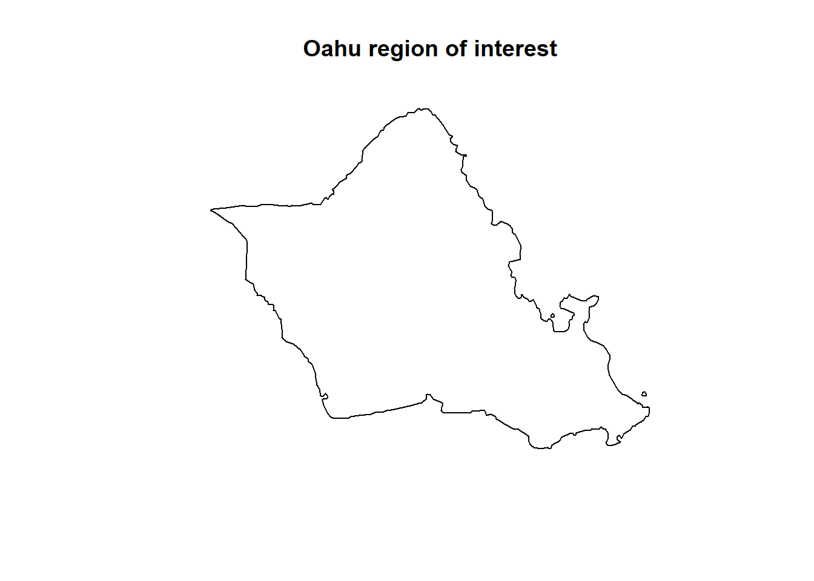
Pulling Black Marble rasters
VNP46A2 is the daily product. Each date is pulled individually and wrapped in tryCatch(), so one missing night does not kill the whole period. This matters because several March storm nights have no usable imagery.
Black Marble labels its layers t2026_03_10, so the names are forced back to ISO dates. Without that, later date matching silently returns nothing.
r_list <- list()
for (period in names(all_dates)) {
dates <- all_dates[[period]]
lst <- lapply(dates, function(d) {
tryCatch(
bm_raster(roi_sf = roi_sf,
product_id = "VNP46A2",
quality_flag_rm = 2,
date = d,
bearer = bearer),
error = function(e) {
message("No imagery for ", d)
NULL
}
)
})
names(lst) <- as.character(dates)
lst <- lst[!sapply(lst, is.null)]
r <- rast(lst)
names(r) <- names(lst)
r_list[[period]] <- r
}
data.frame(
period = names(all_dates),
requested = sapply(all_dates, length),
retrieved = sapply(r_list, nlyr)
) period requested retrieved
baseline baseline 7 7
storm1 storm1 7 4
gap gap 1 1
storm2 storm2 6 6That table belongs in the conclusion. It turns the missing-imagery caveat into a number.
Masking
Everything from here stays on the raw radiance scale. Log transforms are applied only when a map needs them, and always fresh, never on top of an already-logged raster. Logging before computing change would turn absolute change into a log ratio and make percent change uninterpretable.
r_masked <- list()
for (period in names(r_list)) {
r_masked[[period]] <- terra::mask(r_list[[period]], vect(roi_sf))
}
# Coverage per night: how much of Oahu survived the quality filter
coverage <- do.call(rbind, lapply(names(r_masked), function(p) {
s <- r_masked[[p]]
data.frame(
date = as.Date(names(s)),
period = p,
n_valid = sapply(seq_len(nlyr(s)), function(i) sum(!is.na(values(s[[i]]))))
)
}))
coverage$pct_valid <- round(100 * coverage$n_valid / max(coverage$n_valid), 1)
coverage date period n_valid pct_valid
1 2026-03-01 baseline 8269 100
2 2026-03-02 baseline 8269 100
3 2026-03-03 baseline 8269 100
4 2026-03-04 baseline 8269 100
5 2026-03-05 baseline 8269 100
6 2026-03-06 baseline 8269 100
7 2026-03-07 baseline 8269 100
8 2026-03-13 storm1 8269 100
9 2026-03-14 storm1 8269 100
10 2026-03-15 storm1 8269 100
11 2026-03-16 storm1 8269 100
12 2026-03-18 gap 8269 100
13 2026-03-19 storm2 8269 100
14 2026-03-20 storm2 8269 100
15 2026-03-21 storm2 8269 100
16 2026-03-22 storm2 8269 100
17 2026-03-23 storm2 8269 100
18 2026-03-24 storm2 8269 100Under a Kona Low the pixels the satellite loses are disproportionately those under the heaviest cloud, which are also the ones most likely to have lost power. Any difference between the two storms has to be read against this table first.
Period composites and change metrics
Percent change explodes toward meaningless values where the baseline is near zero, so dim pixels are masked out before dividing. The z-score divides by each pixel’s baseline standard deviation, which breaks down at pixels that barely vary, so those are dropped too.
period_mean <- list()
for (period in names(r_masked)) {
period_mean[[period]] <- terra::mean(r_masked[[period]], na.rm = TRUE)
}
NOISE_FLOOR <- 5
meaningful <- period_mean$baseline >= NOISE_FLOOR
keep <- function(r) terra::mask(r, meaningful, maskvalues = FALSE)
percent_storm1 <- keep((period_mean$storm1 - period_mean$baseline) / period_mean$baseline * 100)
percent_storm2 <- keep((period_mean$storm2 - period_mean$baseline) / period_mean$baseline * 100)
percent_gap <- keep((period_mean$gap - period_mean$baseline) / period_mean$baseline * 100)
percent_storm2_gap <- keep((period_mean$storm2 - period_mean$gap) / period_mean$gap * 100)
baseline_sd <- terra::app(r_masked$baseline, sd, na.rm = TRUE)
sd_floor <- max(quantile(values(baseline_sd), 0.1, na.rm = TRUE), 1e-6)
baseline_sd[baseline_sd <= sd_floor] <- NA
z_score_storm1 <- keep((period_mean$storm1 - period_mean$baseline) / baseline_sd)
z_score_storm2 <- keep((period_mean$storm2 - period_mean$baseline) / baseline_sd)
z_score_gap <- keep((period_mean$gap - period_mean$baseline) / baseline_sd)
print(minmax(percent_storm1)) mean
min -54.72377
max 57.99993print(minmax(percent_storm2)) mean
min -87.10132
max 213.56400print(minmax(z_score_storm1)) mean
min -54.47385
max 10.69787print(minmax(z_score_storm2)) mean
min -109.37761
max 23.96773Setting the noise floor from the data
paired <- data.frame(
baseline = values(period_mean$baseline)[, 1],
storm1 = values(period_mean$storm1)[, 1],
storm2 = values(period_mean$storm2)[, 1]
) |>
filter(!is.na(baseline), !is.na(storm1), !is.na(storm2))
paired |>
mutate(bin = cut(baseline, breaks = c(0, 2, 5, 10, 25, 75, Inf),
labels = c("<2", "2-5", "5-10", "10-25", "25-75", "75+"))) |>
group_by(bin) |>
summarize(n = n(),
pct_dark_s1 = round(100 * mean(storm1 < baseline), 1),
pct_dark_s2 = round(100 * mean(storm2 < baseline), 1),
.groups = "drop")# A tibble: 6 × 4
bin n pct_dark_s1 pct_dark_s2
<fct> <int> <dbl> <dbl>
1 <2 4878 23.6 20.8
2 2-5 1156 37 63.8
3 5-10 822 49.9 74.7
4 10-25 798 47.4 68.3
5 25-75 509 40.7 62.5
6 75+ 106 52.8 73.6Daily maps
The log transform is applied here for display only, since radiance is heavily right skewed.
log_it <- function(r) { r[] <- log(r[] + 1); r }### Map: baseline period, before the Kona Lows
ggplot() +
geom_spatraster(data = log_it(r_masked$baseline)) +
facet_wrap(~lyr, ncol = 4) +
scale_fill_gradient2(low = "black",
mid = "yellow",
high = "red",
midpoint = 4.5,
na.value = "transparent") +
labs(title = "Oahu Nighttime Lights: March 1-7, 2026",
subtitle = "Baseline, before the first Kona Low") +
coord_sf() +
theme_void() +
theme(plot.title = element_text(face = "bold", hjust = 0.5),
plot.subtitle = element_text(hjust = 0.5),
strip.text = element_text(face = "bold"),
legend.position = "none")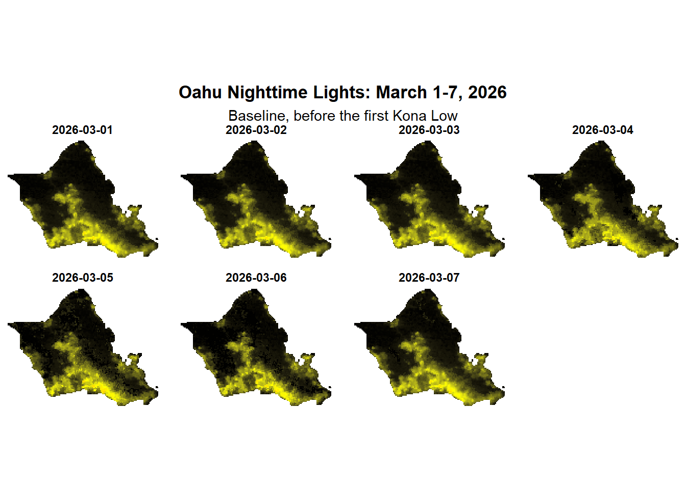
### Map: one panel per day, first storm
ggplot() +
geom_spatraster(data = log_it(r_masked$storm1)) +
facet_wrap(~lyr, ncol = 2) +
scale_fill_gradient2(low = "black",
mid = "yellow",
high = "red",
midpoint = 4.5,
na.value = "transparent") +
labs(title = "Oahu Nighttime Lights: March 10-16, 2026",
subtitle = "First Kona Low storm") +
coord_sf() +
theme_void() +
theme(plot.title = element_text(face = "bold", hjust = 0.5),
plot.subtitle = element_text(hjust = 0.5),
strip.text = element_text(face = "bold"),
legend.position = "none")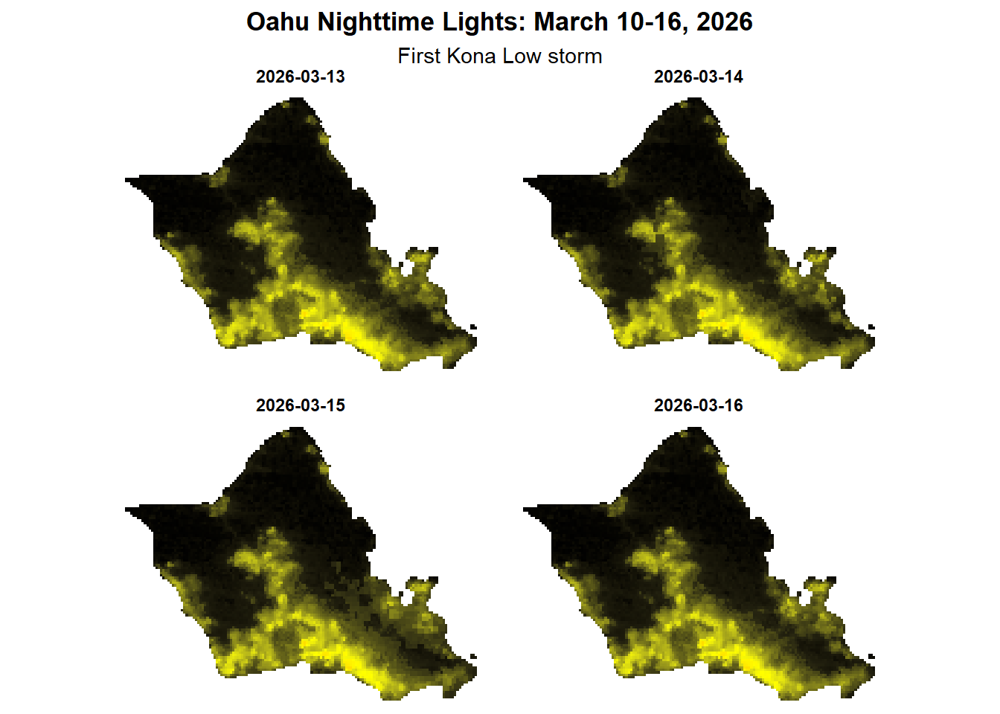
### Map: gap night between the storms
ggplot() +
geom_spatraster(data = log_it(r_masked$gap)) +
scale_fill_gradient2(low = "black",
mid = "yellow",
high = "red",
midpoint = 4.5,
na.value = "transparent") +
labs(title = "Oahu Nighttime Lights: March 18, 2026",
subtitle = "Between the two Kona Low storms") +
coord_sf() +
theme_void() +
theme(plot.title = element_text(face = "bold", hjust = 0.5),
plot.subtitle = element_text(hjust = 0.5),
legend.position = "none")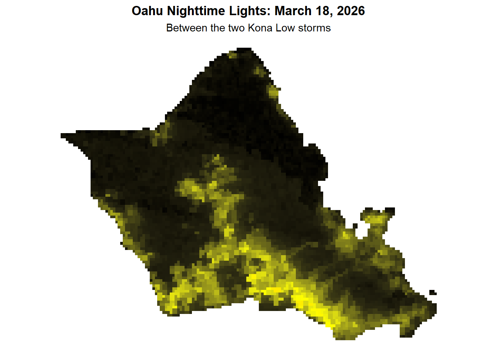
### Map: one panel per day, second storm
ggplot() +
geom_spatraster(data = log_it(r_masked$storm2)) +
facet_wrap(~lyr, ncol = 3) +
scale_fill_gradient2(low = "black",
mid = "yellow",
high = "red",
midpoint = 4.5,
na.value = "transparent") +
labs(title = "Oahu Nighttime Lights: March 19-24, 2026",
subtitle = "Second Kona Low storm") +
coord_sf() +
theme_void() +
theme(plot.title = element_text(face = "bold", hjust = 0.5),
plot.subtitle = element_text(hjust = 0.5),
strip.text = element_text(face = "bold"),
legend.position = "none")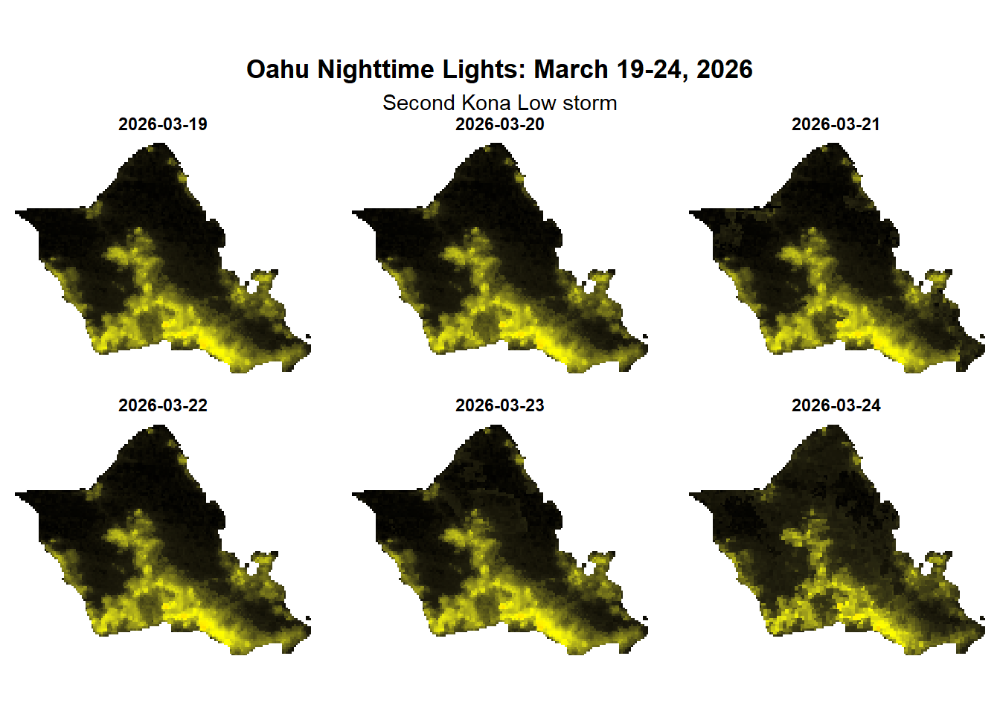
Daily luminance
Dates are derived from the layer names rather than typed by hand, so this cannot fall out of sync with whatever the pull actually returned.
daily <- do.call(rbind, lapply(names(r_masked), function(p) {
data.frame(
Date = as.Date(names(r_masked[[p]])),
Luminance = terra::global(r_masked[[p]], "mean", na.rm = TRUE)[, 1],
Period = p
)
}))
daily$Period <- factor(daily$Period,
levels = c("baseline", "storm1", "gap", "storm2"),
labels = c("Baseline", "First Kona Low", "Gap (Mar 18)", "Second Kona Low"))
baseline_level <- mean(daily$Luminance[daily$Period == "Baseline"], na.rm = TRUE)
ggplot(daily, aes(x = Date, y = Luminance, fill = Period)) +
geom_col() +
geom_hline(yintercept = baseline_level, linetype = "dashed", color = "grey30") +
scale_fill_manual(values = c("Baseline" = "gray70",
"First Kona Low" = "steelblue",
"Gap (Mar 18)" = "goldenrod",
"Second Kona Low" = "maroon")) +
labs(title = "Oahu: Daily Mean Luminance, March 2026",
subtitle = "Dashed line marks the pre-storm baseline",
x = "Date", y = "Mean radiance", fill = "Period") +
theme_minimal()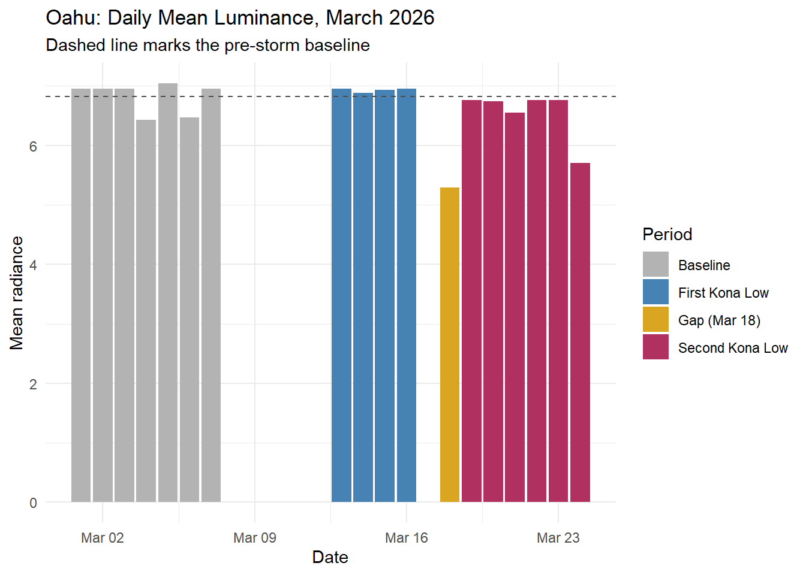
Percent change maps
geom_sf() is used for the boundary outline rather than geom_spatvector(), since roi_sf is an sf object and not a SpatVector.
map_change <- function(r, ttl, sub, lgd) {
v <- values(r)
lim <- max(abs(quantile(v[is.finite(v)], c(0.01, 0.99), na.rm = TRUE)))
ggplot() +
geom_spatraster(data = r) +
geom_sf(data = roi_sf, fill = NA, color = "black", linewidth = 0.2) +
scale_fill_gradient2(low = "blue", mid = "white", high = "red",
midpoint = 0, limits = c(-lim, lim),
oob = scales::squish, na.value = "transparent",
name = lgd) +
labs(title = ttl, subtitle = sub) +
coord_sf() +
theme_void() +
theme(plot.title = element_text(face = "bold", hjust = 0.5),
plot.subtitle = element_text(hjust = 0.5))
}
map_change(percent_storm1, "Percent Change in Nighttime Lights",
"First Kona Low storm vs. baseline", "Percent change")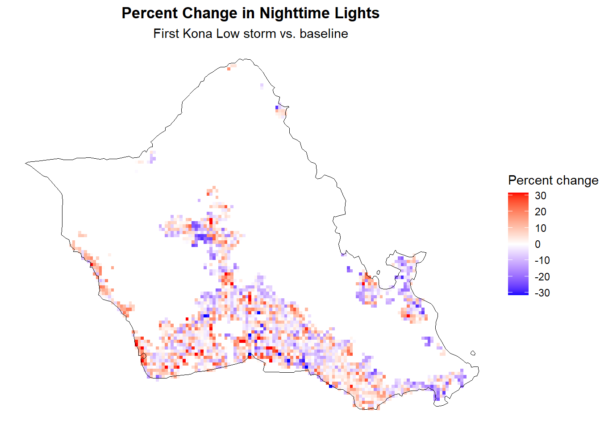
map_change(percent_storm2, "Percent Change in Nighttime Lights",
"Second Kona Low storm vs. baseline", "Percent change")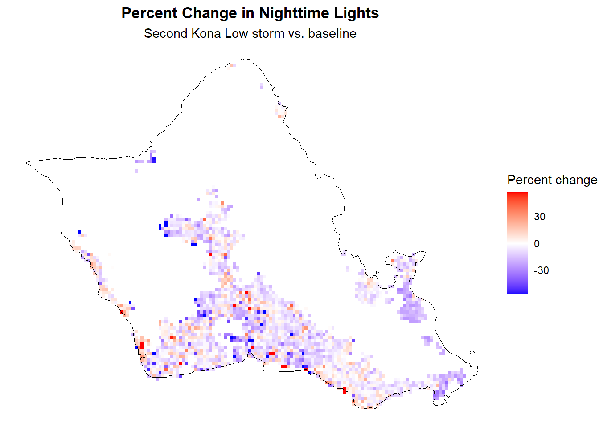
map_change(percent_storm2_gap, "Percent Change in Nighttime Lights",
"Second Kona Low storm vs. gap day", "Percent change")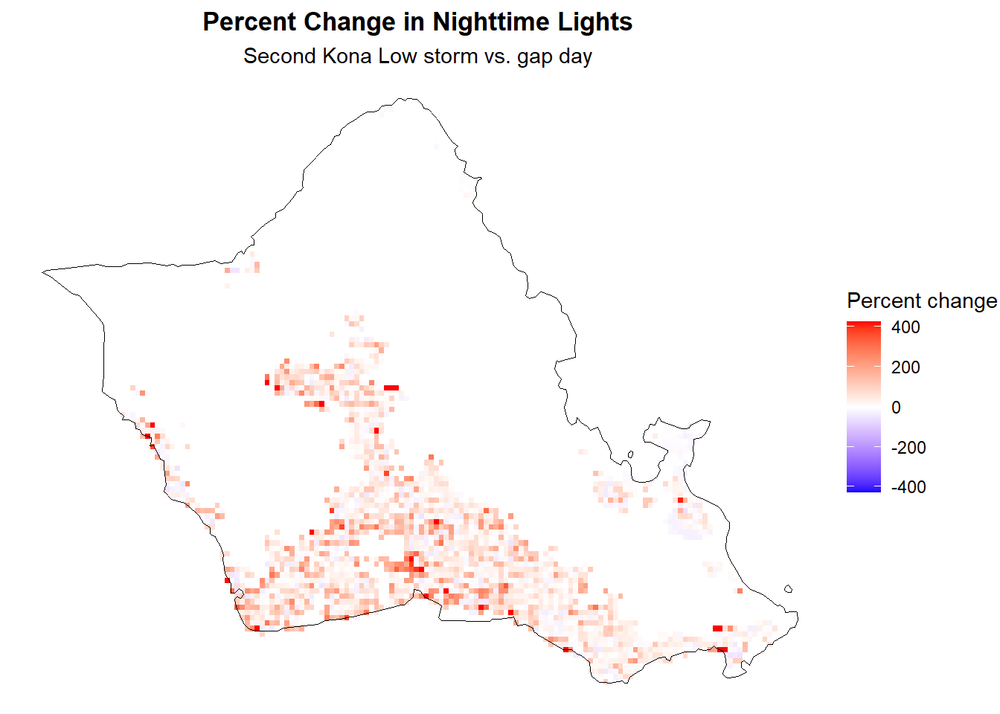
Z-score maps
The z-score asks how unusual a storm value is given how much that pixel normally fluctuates, which surfaces darkening in quiet, stable areas that percent change can bury.
map_change(z_score_storm1, "Radiance Z-Score",
"First Kona Low storm vs. baseline", "Z-score")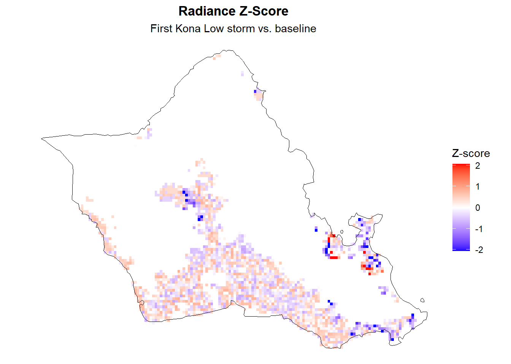
map_change(z_score_storm2, "Radiance Z-Score",
"Second Kona Low storm vs. baseline", "Z-score")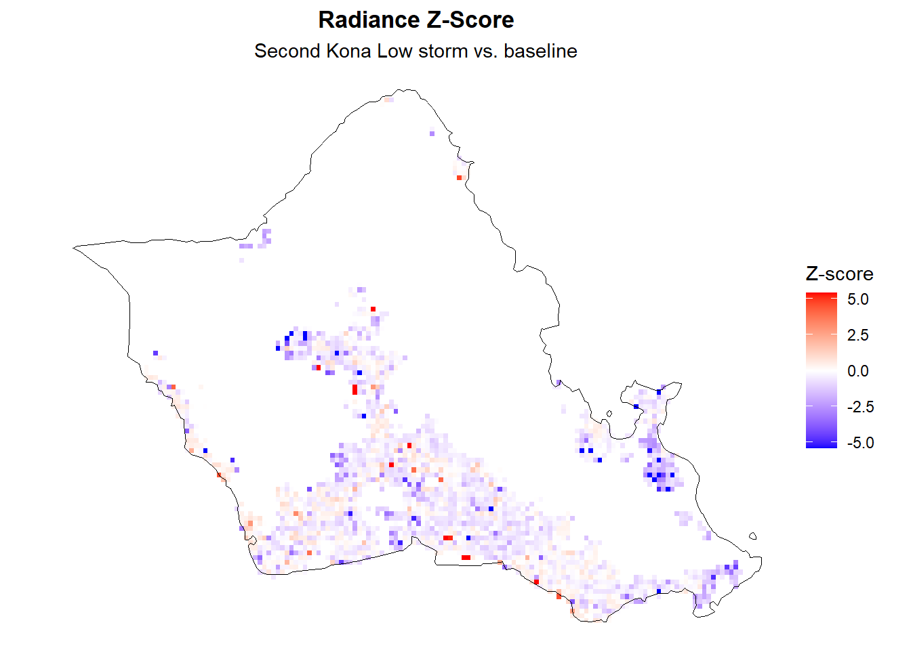
Which storm hit each area harder
z_diff <- z_score_storm1 - z_score_storm2
v <- values(z_diff)
lim <- max(abs(quantile(v[is.finite(v)], c(0.01, 0.99), na.rm = TRUE)))
ggplot() +
geom_spatraster(data = z_diff) +
geom_sf(data = roi_sf, fill = NA, color = "black", linewidth = 0.2) +
scale_fill_gradient2(low = "darkred", mid = "white", high = "steelblue",
midpoint = 0, limits = c(-lim, lim),
oob = scales::squish, na.value = "transparent",
name = "Storm 1 z\nminus\nStorm 2 z") +
labs(title = "Which Kona Low Darkened Each Part of Oahu More",
subtitle = "Red: first storm hit harder. Blue: second storm hit harder.") +
coord_sf() +
theme_void() +
theme(plot.title = element_text(face = "bold", hjust = 0.5),
plot.subtitle = element_text(hjust = 0.5))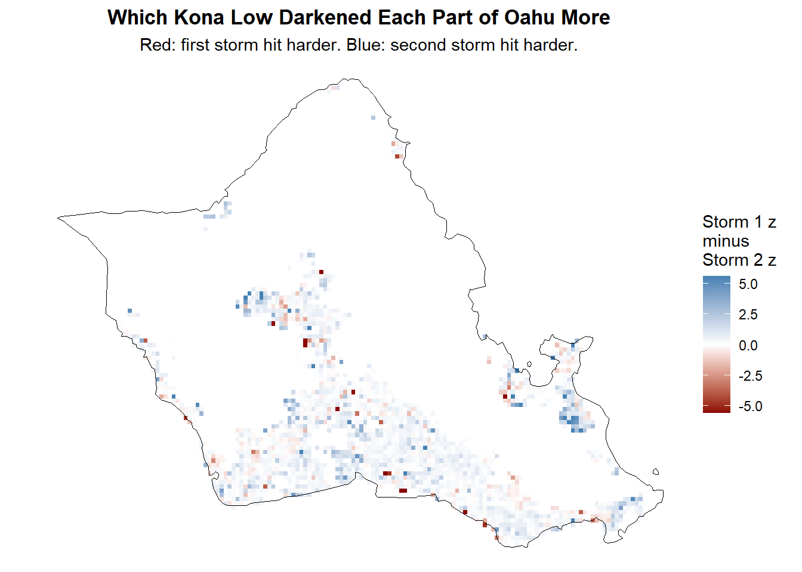
Change by community
Census designated places let specific neighborhoods be compared directly instead of picking points by hand.
oahu_places <- places(state = "HI", cb = TRUE, year = 2022) |>
st_transform(4326) |>
st_filter(roi_sf, .predicate = st_intersects)
extract_mean <- function(r, colname) {
out <- exact_extract(r, oahu_places, fun = "mean",
append_cols = "NAME", progress = FALSE)
names(out)[names(out) == "mean"] <- colname
out
}
region_lookup <- data.frame(
NAME = c("Waianae", "Maili", "Nanakuli", "Makaha",
"Kapolei", "Ewa Beach", "Ewa Gentry", "Makakilo",
"Mililani Town", "Wahiawa", "Waipahu", "Pearl City", "Aiea",
"Urban Honolulu", "East Honolulu",
"Kailua", "Kaneohe", "Waimanalo",
"Laie", "Haleiwa", "Waialua", "Kahuku"),
region = c(rep("Leeward", 4), rep("Ewa", 4), rep("Central", 5),
rep("Honolulu", 2), rep("Windward", 3), rep("North Shore", 4))
)
place_change <- extract_mean(percent_storm1, "pct_storm1") |>
left_join(extract_mean(percent_storm2, "pct_storm2"), by = "NAME") |>
left_join(extract_mean(z_score_storm1, "z_storm1"), by = "NAME") |>
left_join(extract_mean(z_score_storm2, "z_storm2"), by = "NAME") |>
left_join(region_lookup, by = "NAME") |>
mutate(z_diff = z_storm1 - z_storm2)
place_change |>
filter(!is.na(z_storm1)) |>
arrange(z_storm1) |>
select(NAME, region, pct_storm1, pct_storm2, z_storm1, z_storm2, z_diff) NAME region pct_storm1 pct_storm2 z_storm1
1 Mililani Town Central -2.039607286 -1.65842175 -1.736318588
2 Ahuimanu <NA> -19.563043594 -6.68059349 -1.243430734
3 Wheeler AFB <NA> -12.939039230 -9.65327168 -0.723597705
4 Waimanalo Windward -13.890836716 -18.91727638 -0.707524002
5 Kaneohe Windward -2.298587322 -3.44467878 -0.571834683
6 Whitmore Village <NA> -10.896845818 -4.31876135 -0.487501502
7 East Honolulu Honolulu -4.077053547 -10.48585892 -0.431316733
8 Kahaluu <NA> -9.708772659 -11.44073200 -0.389265716
9 Kaneohe Base <NA> -4.850070000 -4.68138409 -0.358578563
10 Kailua Windward -2.358268023 -16.33058167 -0.348200053
11 Royal Kunia <NA> -6.396861076 -11.60293770 -0.294295132
12 Kahuku North Shore -4.395758629 -11.92133427 -0.276820660
13 Ewa Villages <NA> 0.722291410 -4.20056581 -0.139103770
14 Haleiwa North Shore -3.880985260 -25.72931671 -0.137841344
15 Waipio Acres <NA> -4.179717541 -6.21991110 -0.133021891
16 Pearl City Central -0.004099942 -2.88040948 -0.074182980
17 Wahiawa Central 1.324339867 -6.02439260 -0.061210439
18 Laie North Shore 0.129907638 0.54407686 -0.023036357
19 Kapolei Ewa 0.515902400 -1.28186369 -0.001245803
20 Urban Honolulu Honolulu 0.675778329 -3.75808048 0.036396772
21 Ewa Beach Ewa 1.747170568 -5.95400524 0.038785227
22 Hickam Housing <NA> 3.739221096 -0.63310856 0.049328458
23 Waimalu <NA> 1.419686556 -5.41870594 0.060280800
24 Waipahu Central 1.259884238 -4.45136833 0.063283555
25 Waimanalo Beach <NA> -0.358783692 -18.47669792 0.074042328
26 Aiea Central 1.929765701 -1.17081881 0.097947098
27 Waikele <NA> 1.858152270 -3.03596401 0.099535741
28 Halawa <NA> 3.274817944 -3.17805719 0.101437524
29 East Kapolei <NA> 0.865184069 -4.78748083 0.106947429
30 Schofield Barracks <NA> 2.771809101 -4.49509382 0.115699373
31 Ocean Pointe <NA> 2.568088293 -5.02044678 0.120110504
32 Iroquois Point <NA> 4.182527542 -11.09259510 0.124181256
33 Makakilo Ewa 2.516691685 1.78978229 0.144737214
34 Helemano <NA> 2.104554415 -8.12190247 0.157499760
35 Mililani Mauka <NA> 3.873539686 -1.44936240 0.158161983
36 Waialua North Shore 1.491884470 -19.81858253 0.160825908
37 Ewa Gentry Ewa 3.731590986 -4.10066605 0.161317632
38 Kalaeloa <NA> 6.009625435 -1.31023920 0.177136213
39 West Loch Estate <NA> 7.910721779 -4.48847580 0.189241409
40 Maili Leeward 6.141442776 -0.03423927 0.191216141
41 Waipio <NA> 6.475001812 2.73070335 0.225392386
42 Makaha Leeward 6.741656780 -0.84105229 0.252026528
43 Ko Olina <NA> 11.845764160 22.31383514 0.321058959
44 Nanakuli Leeward 8.525129318 4.34750795 0.345502913
45 Makaha Valley <NA> 6.704931736 -5.27085686 0.377964467
46 Waianae Leeward 8.775069237 0.93619841 0.390303016
47 Kawela Bay <NA> 9.828021049 8.29502010 0.394970596
48 Heeia <NA> 6.267389297 -3.99545074 1.033055902
z_storm2 z_diff
1 -0.08648363 -1.64983496
2 -0.47699007 -0.76644066
3 -1.03985643 0.31625873
4 -0.92551374 0.21798974
5 -0.70963234 0.13779765
6 -0.26138496 -0.22611654
7 -0.90922946 0.47791272
8 -0.64019215 0.25092643
9 -0.62192273 0.26334417
10 -1.90759361 1.55939355
11 -0.89720130 0.60290617
12 -1.34414899 1.06732833
13 -0.68221307 0.54310930
14 -1.78133285 1.64349151
15 -5.00522518 4.87220329
16 -0.24985513 0.17567215
17 -0.50045043 0.43923999
18 0.02821794 -0.05125429
19 -0.13107727 0.12983147
20 -0.28530005 0.32169682
21 -0.24684134 0.28562657
22 -0.20920700 0.25853546
23 -0.13330935 0.19359015
24 -0.25134552 0.31462907
25 -1.16644168 1.24048401
26 -0.02086613 0.11881322
27 -0.25738472 0.35692046
28 -0.33746055 0.43889807
29 -0.13991481 0.24686224
30 -3.87975168 3.99545106
31 -0.44478658 0.56489708
32 -0.98645949 1.11064075
33 0.08267716 0.06206005
34 -0.91697407 1.07447383
35 -0.15803859 0.31620057
36 -1.71999288 1.88081878
37 -0.51010025 0.67141788
38 -0.18107469 0.35821091
39 -0.22409227 0.41333368
40 -0.45349756 0.64471370
41 0.06041548 0.16497691
42 -0.18544738 0.43747391
43 0.70559114 -0.38453218
44 0.11057279 0.23493012
45 -0.30679342 0.68475789
46 0.09424545 0.29605757
47 0.37901556 0.01595503
48 -0.21098910 1.24404500place_change |>
filter(!is.na(z_storm1)) |>
select(NAME, `Storm 1` = z_storm1, `Storm 2` = z_storm2) |>
pivot_longer(c(`Storm 1`, `Storm 2`), names_to = "storm", values_to = "z") |>
ggplot(aes(x = reorder(NAME, z), y = z, fill = storm)) +
geom_col(position = "dodge") +
geom_hline(yintercept = 0, color = "grey30") +
coord_flip() +
scale_fill_manual(values = c("Storm 1" = "steelblue", "Storm 2" = "maroon")) +
labs(title = "Which Kona Low Hit Which Community Harder",
x = NULL, y = "Mean z-score", fill = NULL) +
theme_minimal()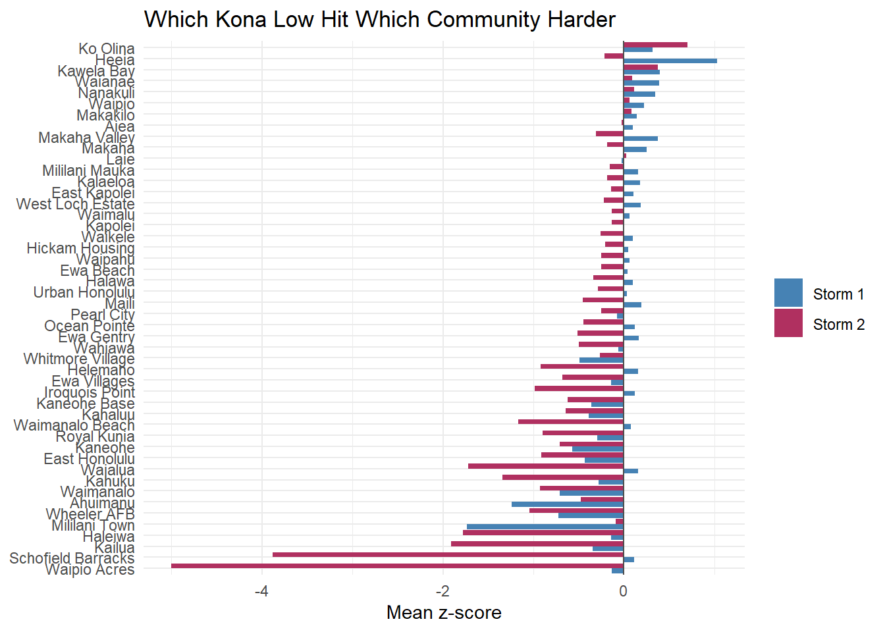
Answering the research question
These values are computed from the objects above, so the numbers in the text update whenever the document re-renders.
zv1 <- values(z_score_storm1); zv2 <- values(z_score_storm2)
zvg <- values(z_score_gap)
mean_z_s1 <- mean(zv1[is.finite(zv1)], na.rm = TRUE)
mean_z_s2 <- mean(zv2[is.finite(zv2)], na.rm = TRUE)
mean_z_gap <- mean(zvg[is.finite(zvg)], na.rm = TRUE)
pv1 <- values(percent_storm1); pv2 <- values(percent_storm2)
mean_p_s1 <- mean(pv1[is.finite(pv1)], na.rm = TRUE)
mean_p_s2 <- mean(pv2[is.finite(pv2)], na.rm = TRUE)
worse_storm <- if (mean_z_s1 < mean_z_s2) "the first storm" else "the second storm"
agree_metric <- if ((mean_z_s1 < mean_z_s2) == (mean_p_s1 < mean_p_s2)) "agree" else "disagree"
region_summary <- place_change |>
filter(!is.na(region), !is.na(z_storm1)) |>
group_by(region) |>
summarize(z_storm1 = mean(z_storm1, na.rm = TRUE),
z_storm2 = mean(z_storm2, na.rm = TRUE),
.groups = "drop") |>
mutate(z_diff = z_storm1 - z_storm2)
worst_s1_region <- region_summary$region[which.min(region_summary$z_storm1)]
worst_s2_region <- region_summary$region[which.min(region_summary$z_storm2)]
biggest_split <- region_summary$region[which.max(abs(region_summary$z_diff))]
region_summary# A tibble: 6 × 4
region z_storm1 z_storm2 z_diff
<chr> <dbl> <dbl> <dbl>
1 Central -0.342 -0.222 -0.120
2 Ewa 0.0859 -0.201 0.287
3 Honolulu -0.197 -0.597 0.400
4 Leeward 0.295 -0.109 0.403
5 North Shore -0.0692 -1.20 1.14
6 Windward -0.543 -1.18 0.638sapply(list(z1 = z_score_storm1, z2 = z_score_storm2),
function(r) sum(is.infinite(values(r))))z1 z2
0 0 quantile(values(baseline_sd), 0.1, na.rm = TRUE) 10%
0.03038444 sum(values(baseline_sd) == 0, na.rm = TRUE)[1] 0zero_sd <- baseline_sd == 0
plot(zero_sd, main = "Pixels with zero baseline variability")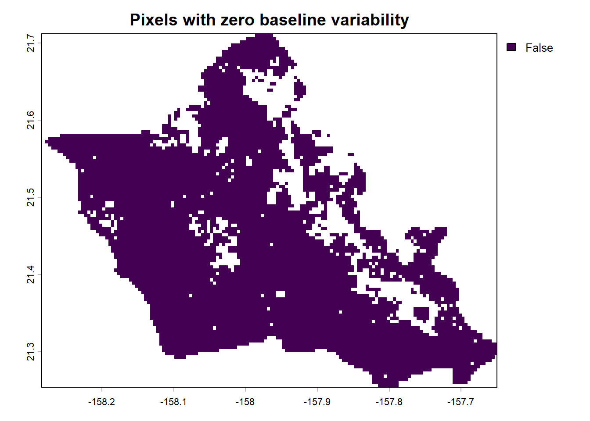
Main question. Across all meaningful Oahu pixels, the second storm produced the larger mean darkening. Storm 1 had a mean z-score of -0.03 against -0.52 for Storm 2, and mean percent changes of 0.9% and -5.3%. The two metrics agree on which storm was worse islandwide.
Sub-question 1, regional differences. Storm 1’s largest mean darkening fell on the Windward region, while Storm 2’s fell on North Shore. The region where the two storms diverged most was North Shore.
region_summary |>
select(region, `Storm 1` = z_storm1, `Storm 2` = z_storm2) |>
pivot_longer(c(`Storm 1`, `Storm 2`), names_to = "storm", values_to = "z") |>
ggplot(aes(x = reorder(region, z), y = z, fill = storm)) +
geom_col(position = "dodge") +
geom_hline(yintercept = 0, color = "grey30") +
coord_flip() +
scale_fill_manual(values = c("Storm 1" = "steelblue", "Storm 2" = "maroon")) +
labs(title = "Which Storm Hit Which Region Harder",
x = NULL, y = "Mean z-score", fill = NULL) +
theme_minimal()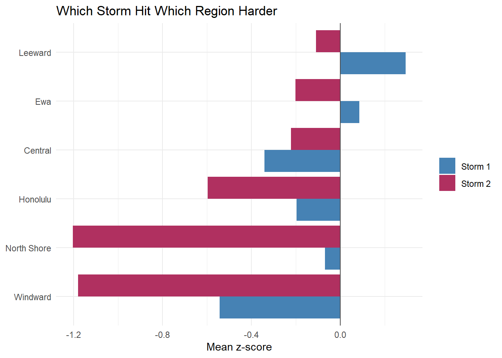
Did the island recover between storms? March 18 had a mean z-score of -2.28. A value near zero means the grid was substantially restored before the second system arrived, so the two storms can be read as separate events. A strongly negative value means the second storm landed on a grid still down from the first, and part of its measured impact is inherited rather than new.
Sub-question 2, storm paths. The storm-versus-storm map above shows which system darkened each part of the island more. Compare it against the rainfall and wind summaries in the NWS Honolulu March 2026 severe weather report to judge whether darkening followed each storm’s track.
Limitations
Radiance is a proxy for grid status rather than a measurement of it, so cloud attenuation during a Kona Low is indistinguishable from an outage at the pixel level. The coverage table above shows how much of the island each period actually delivered, and the pixels lost to cloud are disproportionately those under the heaviest rain, which biases against detecting the worst-hit areas. VIIRS also observes only once per night at roughly 1 to 2 AM local time, so an outage that began and resolved between overpasses leaves no trace. Finally, EAGLE-I outage reports are not yet published for 2026, so nothing here is validated against reported customer counts.